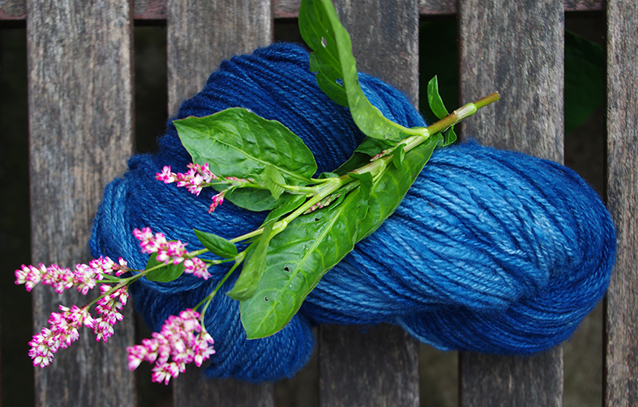
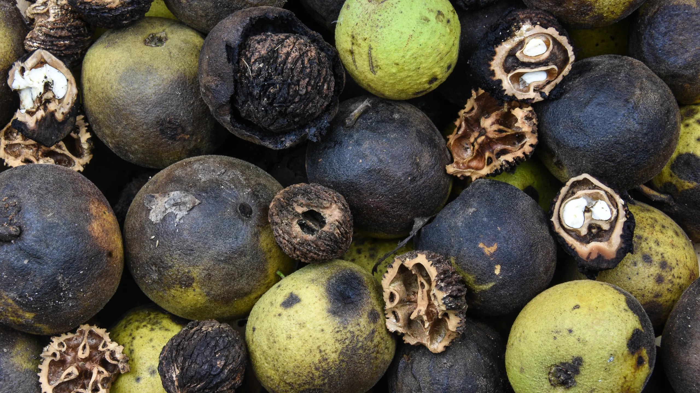
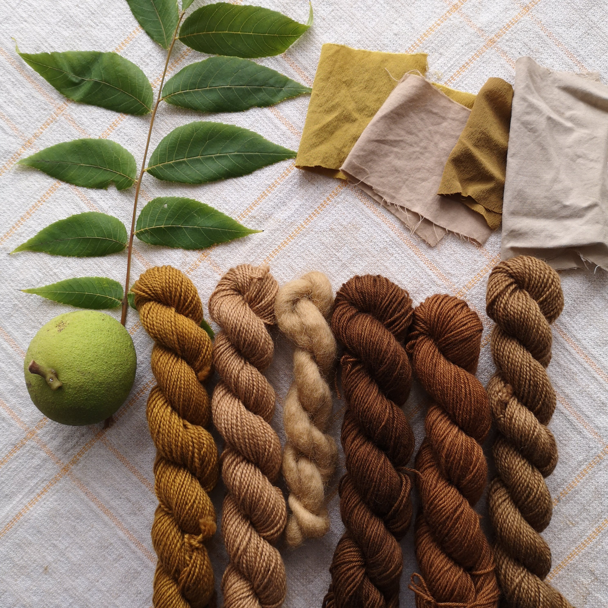
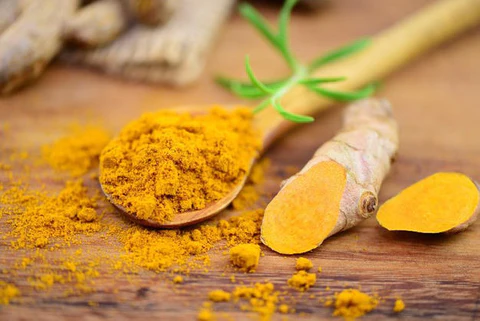
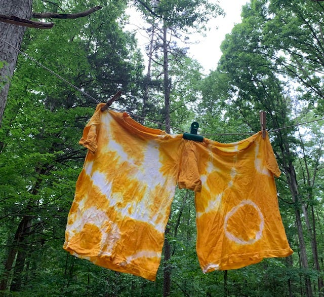

From Garden to Garment: Crafting with the Colors of the Natural World
For millennia, humans have harnessed the colorful potential of plants to dye textiles, creating vibrant tapestries, garments, and art. From the deep blues of indigo to the fiery reds of madder root, nature offers a diverse palette waiting to be explored. This article delves into the fascinating world of natural dyes, unveiling the secrets of transforming leaves, flowers, and roots into a spectrum of colors.
Notable Dye Plants
Though there is a near endless amount of plants that can be used as fabric dye, there are some that are more recognizeable than others.
Japanese Indigo (Persicaria tinctoria)
As the name suggests, Japanese Indigo is native to and has been long utilized in Japan. Sometimes called Japanese Blue, this plant produces a deep blue pigment when the cell walls of the leaves are broken. Indigo famously gives denim it's blue color. It has long been used to color traditional Japanese garments.


Black Walnuts (Juglans nigra)
Black Walnut trees are abundant in many parts of the United States as well as Canada. Under the green flesh of the tree's fruit lies the nut. The hull of this fruit contains many chemical compounds, almost all of which come together to create a rich blackish-brown dye. Galls from the Black Walnut tree can also be used for pigment, and yield a similar color.


Turmeric (Curcuma longa)
A close relative of ginger root, turmeric is a root typically used in Middle Eastern and South Asian cuisine. Those who have used turmeric in their own cooking will know that it stains hands and clothes very easily. Luckily, turmeric produces a vibrant orange or gold color when used to dye fabric.

